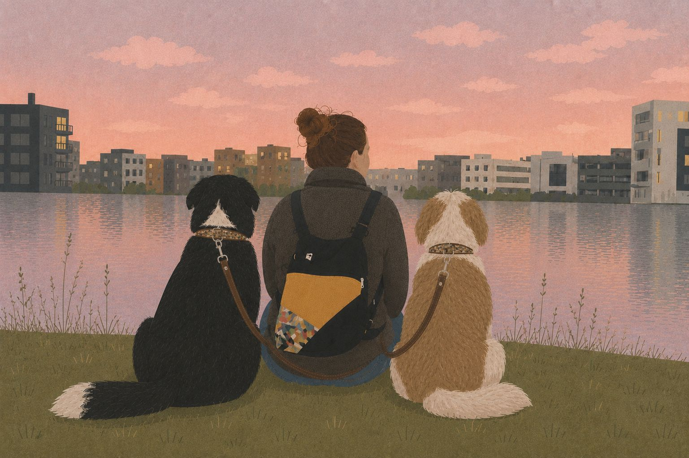

About me

Animals have been part of my life for as long as I can remember.
I grew up with dogs and, from a very young age, my life was also shared with hamsters, turtles, birds, and cats. Each one, in their own way, awakened in me curiosity, affection, and a deep respect for animals.
But there has always been a special connection with dogs.
For many years, I thought loving a dog meant caring for them, protecting them, giving them affection, and making sure they had a good life. Over time, I discovered something deeper: loving a dog also means wanting to understand them.
Understanding how they communicate.
What they feel.
Why they do what they do.
What they need from us.
And, above all, learning to see them as the individual they are.
That curiosity and love for dogs grew until it became a true need to learn. To understand not only their behaviours, but everything behind them. That is why I decided to train in Professional Conscious Dog Education (ECCP), a year-long program focused on dog education and behaviour modification from an integral perspective.
Through ECCP I am deepening in areas I am passionate about such as the study and biology of behaviour, the neurophysiological bases of behaviour, learning, ontogeny, genetics and environmental influence, animal welfare, communication and the social behaviour of dogs, among many others.
I am also learning to understand much more complex processes related to emotions and behaviour: stress, fear, anxiety, separation-related problems, reactivity and other behavioural disorders, as well as the importance of knowing when a case requires joint work or referral to professionals in other specialties.
All of this is profoundly changing the way I understand dogs. For me, education no longer means simply getting a dog to obey or to "behave well". It means asking ourselves why a behaviour appears before trying to modify it. It means observing the individual in front of us, taking into account their genetics, their development, their previous experiences, their learning, their emotional state, their environment, their needs and the relationship they maintain with the people they live with. Because a behaviour never exists in isolation.
I believe in education based on respect, empathy, trust, knowledge and understanding, where we can become a safe reference for our dogs without ceasing to listen to what they have to tell us.
Because dogs speak: they do so with their bodies, with their movements, with the distances they take and those they seek, with their looks, with their decisions and also through those behaviours that humans often interpret simply as "problems". Learning to observe them differently has changed how I see them. And it has changed me too.
A path that has only just begun
The more I study canine behaviour, the more questions appear and the more I want to keep learning.
That is why ECCP does not represent the end of my training for me, but the beginning of a professional path. My next steps will be aimed at deepening especially in ethology and animal behaviour, and also in the field of therapy dogs and dog-assisted interventions, where I want to continue exploring that extraordinary relationship that can be built between animals and people.
My goal is to continue training and gaining experience to understand better not only what a dog does, but why it does it, what it is feeling, what it needs and how we can support it while respecting who it is. Because the more I learn about them, the more aware I become of all that I still have to discover.
First they were childhood companions.
Then they became a passion.
Today they are also becoming my professional path.
A path I want to follow with knowledge, sensitivity, responsibility and, above all, the enormous respect I feel for them.
Because for me, education begins with understanding.
And understanding begins with learning to listen.